For this part of the project, I had to take sets of photos. The sets of photos had to have projective transformations between them (rotating the camera). The images were later going to be stitched together to form panoramic images. For part 2, we had to recover the homographies between the images. I used the provided tool to manually select points in the images that corresponded to each other. I then used these points to compute the homography matrix using the Direct Linear Transformation (DLT) algorithm.
The goal is to find the 8 unknown values in the homography matrix H

A point correspondence relates a point p = (x, y) in the first image to p' = (x', y') in the second image via the equation p' = Hp. In homogeneous coordinates, this is:

After expanding and rearranging we have grouped all the unknown h terms on one side, forming the Ah = b structure.

Each point correspondence provides these two equations. For n points, we can construct a 2n x 8 matrix A and a 2n x 1 vector b. The vector of unknowns h is [h11, h12, h13, h21, h22, h23, h31, h32]. The two rows of A and b for a single point (x, y, x', y') look like this:

We stack these A_i and b_i blocks for all n points and solve the overdetermined system Ah=b using the method of least squares.


Next, we match up points and derive homography matrices


For part 3, I implemented two image warping functions: nearest neighbor interpolation and bilinear interpolation. These functions take an input image and a homography matrix and produce a warped output image. I used the method created to derive homography matrices in part 2 but on different images. In terms of differences between the two methods, nearest neighbor interpolation is faster but can produce blocky artifacts, while bilinear interpolation is slower but produces smoother results. I found that bilinear interpolation generally produced better results, especially for images with fine details. It might be difficult to see the differences in the warped images because the images are quite low resolution though.


For part 4, I implemented a function to create a simple mosaic by warping one image onto another using the computed homography matrix. The function first computes the size of the output mosaic and then warps the second image onto the first image using bilinear interpolation. Finally, it combines the two images to create the mosaic. I created mosaics for seperate sets of images than those taken in part 1. The results were visually appealing, with smooth transitions between the two images. The choice of images also played a significant role in the effectiveness of the mosaics. I found that using images with similar color tones and lighting conditions produced more seamless results.


For this part of the project, I used the provided Harris corner detection function and compared it with a from-scratch Adaptive Non-Maximal Suppression (ANMS) implementation. The Harris corner detector identifies corners in an image by computing the gradient of pixel intensities and looking for regions with high variation in multiple directions. The ANMS algorithm refines the corner detection results by suppressing non-maximal corners based on their strength and spatial distribution. This helps to ensure that the detected corners are well-distributed across the image.
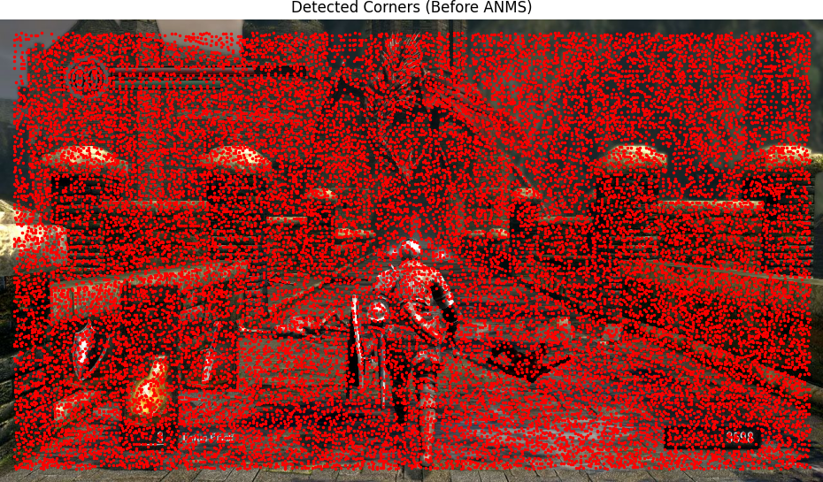
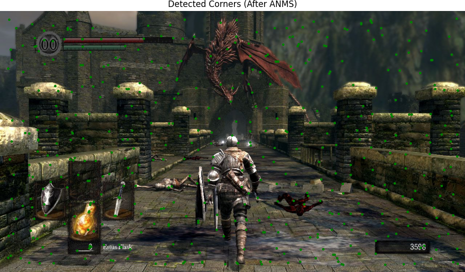
For this part, I implemented a feature descriptiuon extractor to extract 8x8 axis-aligned patches. My extractor does the following steps:
1. Extracts a patch_size x patch_size window around each corner.
2. Applies a Gaussian blur.
3. Subsamples the patch down to 8x8.
4. Flattens and normalizes the 8x8 patch to create a 64-element descriptor.
Here is an example
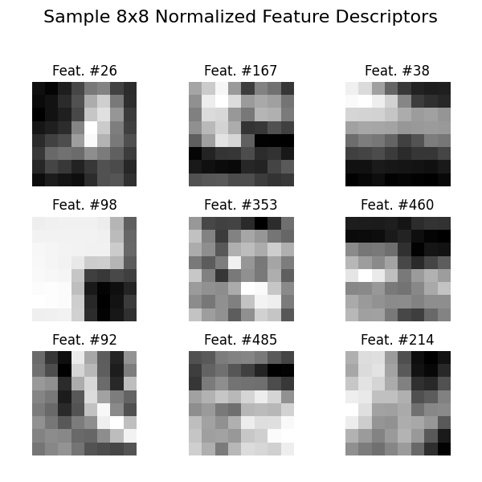
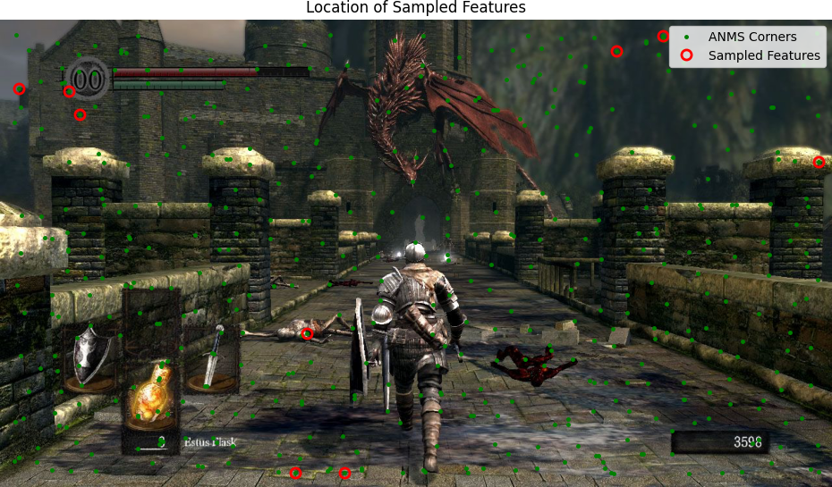
For this part of the project, I implemented a feature matching algorithm using the ratio test. The algorithm computes the Euclidean distance between feature descriptors from two images and identifies matches based on the ratio of the distances to the nearest and second-nearest neighbors. A match is accepted if the ratio of these distances is below a specified threshold (0.4 in my case).
Here's some examples
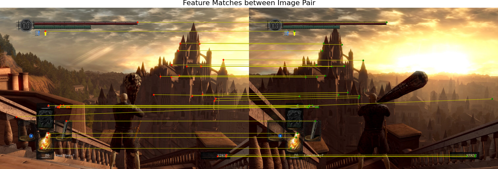
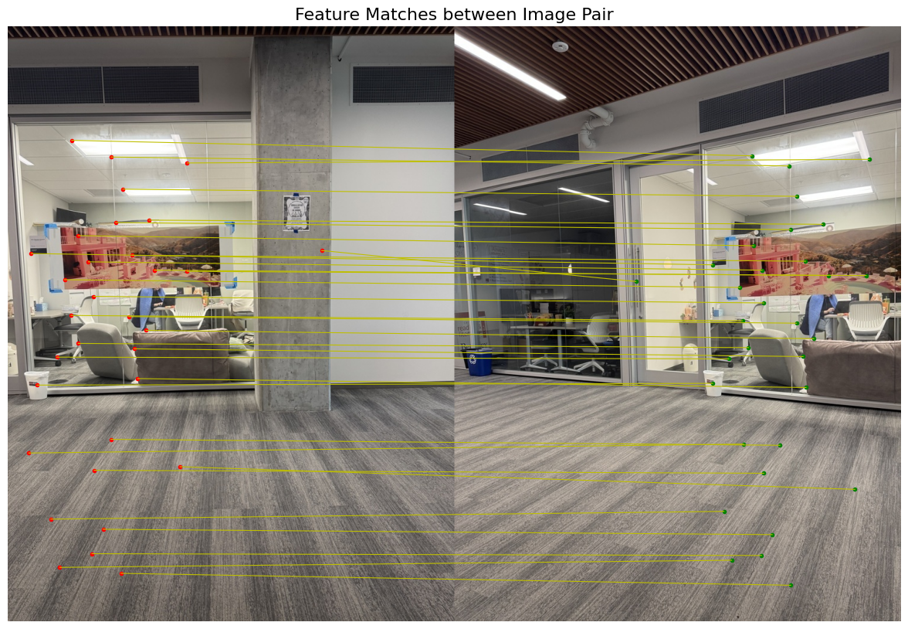
For this part of the project, I implemented the RANSAC algorithm to robustly estimate the homography matrix between two images. RANSAC iteratively selects random subsets of feature matches to compute candidate homography matrices and evaluates them based on the number of inliers (matches that fit the model within a certain threshold). The homography with the highest number of inliers is selected as the final estimate. I had to do this because the ratio test still still contained some outliers that skewed things. RANSAC helped to filter these out and produce a more accurate homography estimate.
Here are some examples
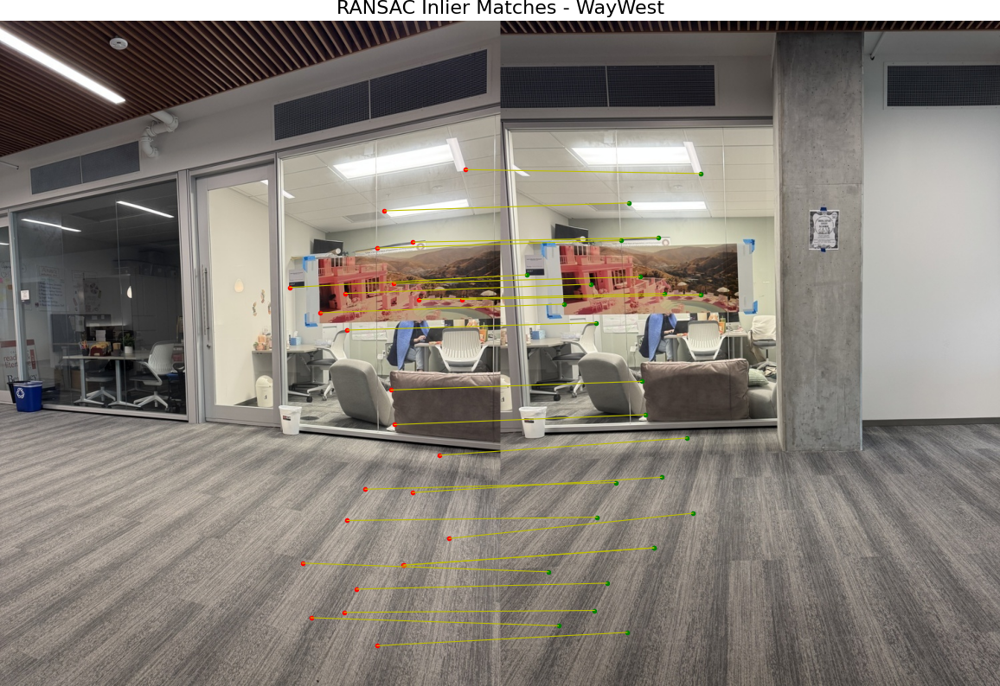
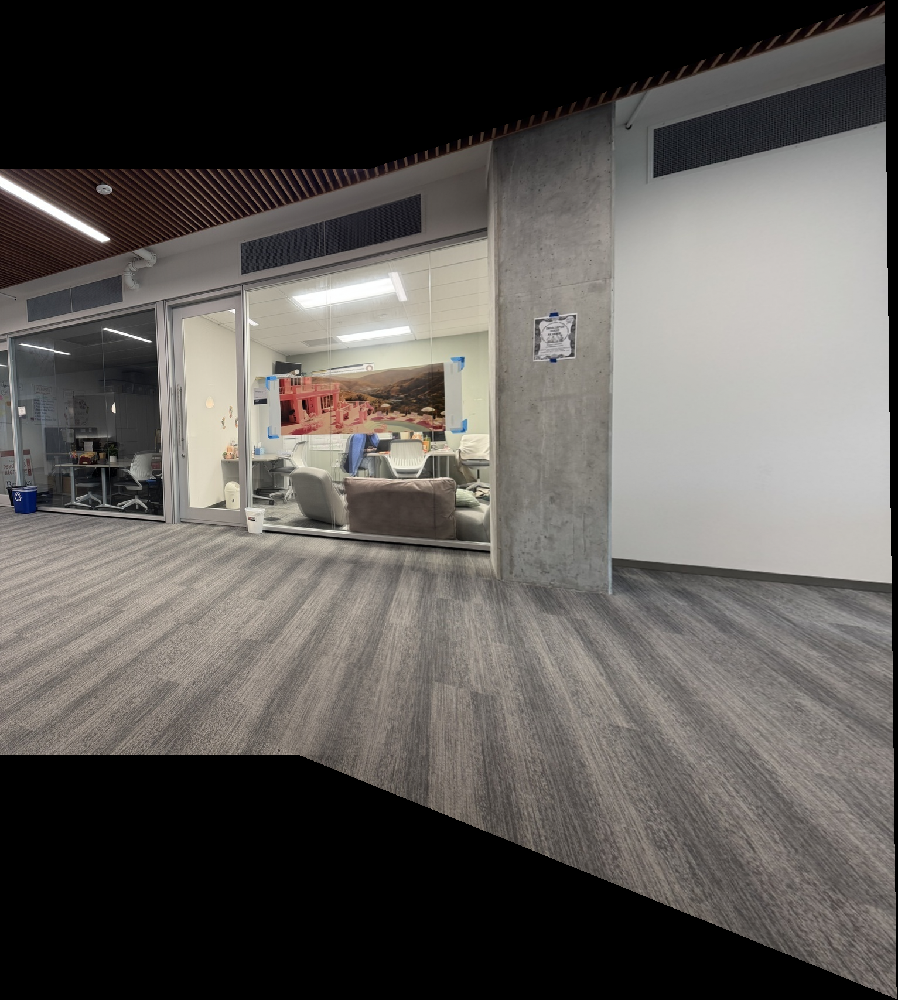

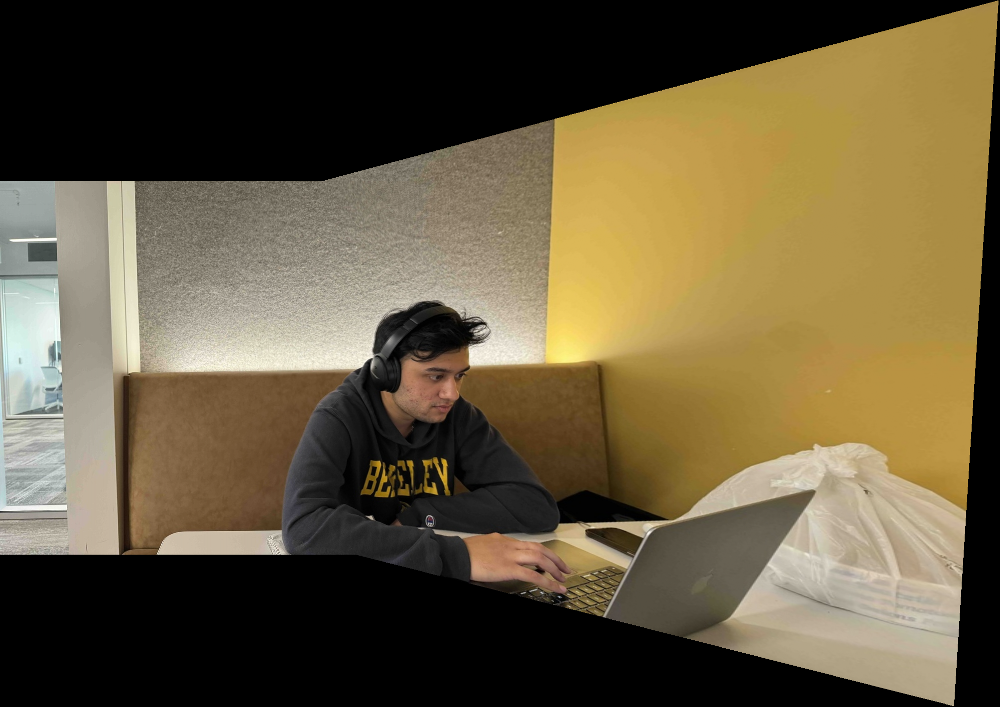
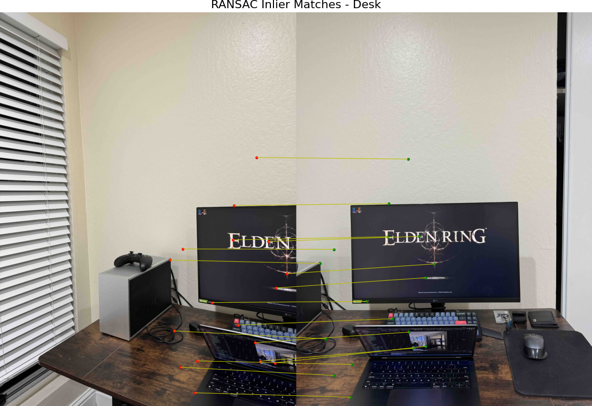
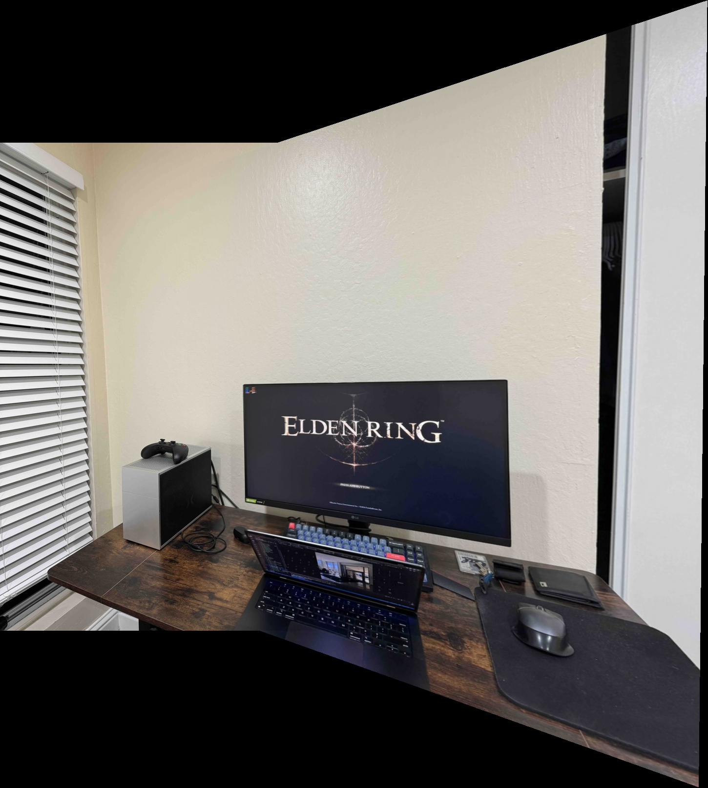
When comparing the Ransac automatic mosaics to the manual point selection done in the last part, there are a few differences that become evident. Manual point-and-click leads to some distortions and artifacts in the mosaics that weren't obvious until we saw the Ransac results. These abnormalities
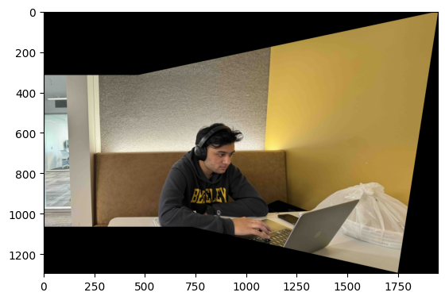
You can see that the manual mosaic has a bit more extreme warping and some artifacts in the right half of the image.